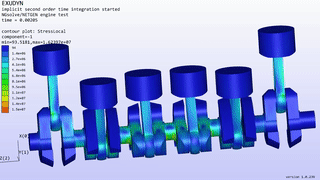
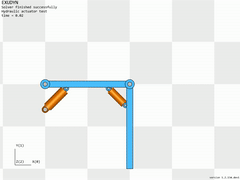
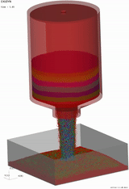
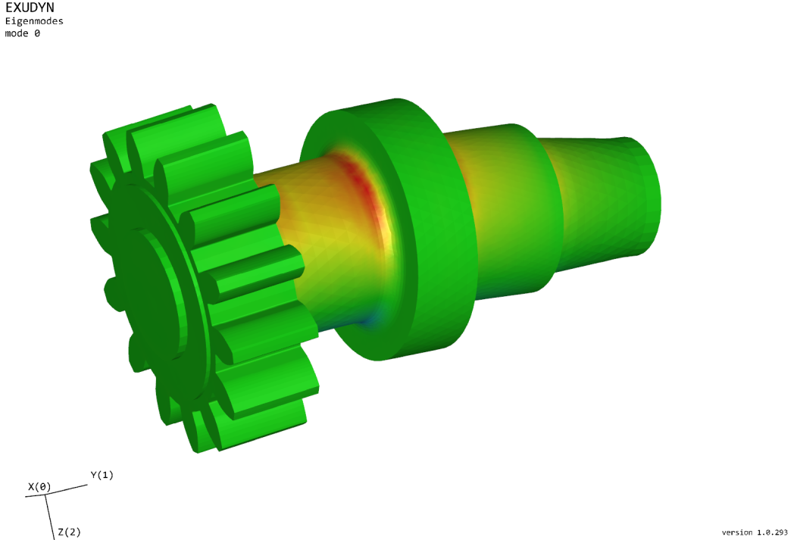
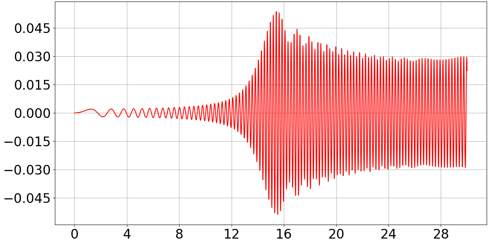
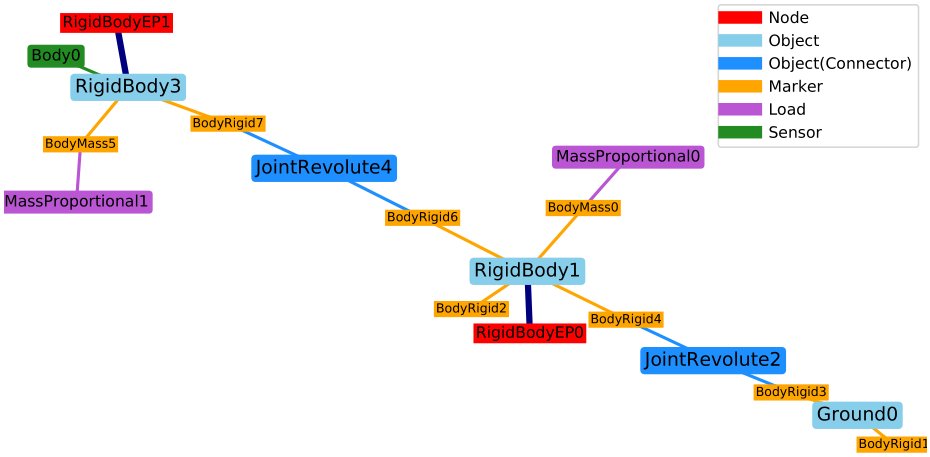

Exudyn
A flexible multibody dynamics systems simulation code with Python and C++
Developers, after cloning: start with docs/dev/GETTING_STARTED.md - from a clone to a build and a passing test run.
Since version 1.11.0, Exudyn is heavily developed with Anthropic’s Claude Code: code, workflows, documentation, tests and examples.
Exudyn version = 1.13.3 (Newborn)
University of Innsbruck, Department of Mechatronics, Innsbruck, Austria
Update on Exudyn V1.12: a revision of the whole project - star imports now export only what a module defines (add import numpy as np and friends to older scripts), python -m exudyn info reports an installation, exceptions say what kind of problem they are, the documentation is Markdown and there is a CHANGELOG.md; the wheels and the documentation are built by GitHub CI. The full list is in the revisions chapter.
Update on Exudyn V1.9.0: newer examples use exudyn.graphics instead of GraphicsData functions. FEM now uses internally in mass and stiffness matrices the scipy sparse csr matrices.
Exudyn is free, open source and with plenty of documentation, examples, and test models
pre-built for Python 3.10 - 3.14 under Windows , Linux and MacOS available ( older versions available for Python >= 3.6); to build wheels yourself, see docs/dev/BUILD.md
Exudyn can be linked to any other Python package, but we explicitly mention: NGsolve, OpenAI, OpenAI gym, Robotics Toolbox (Peter Corke), Pybind11
     


How to cite:
Johannes Gerstmayr. Exudyn – A C++ based Python package for flexible multibody systems. Multibody System Dynamics, Vol. 60, pp. 533-561, 2024. https://doi.org/10.1007/s11044-023-09937-1
The full documentation is the HTML documentation on Read the Docs : the user manual, the reference manual of all items, the Python utility functions and the Python-C++ command interface.
For license, see LICENSE.txt in the root github folder on github!
If you like using Exudyn, please add a star on github and follow us on Twitter @RExudyn !
In addition to the tutorials in the documentation, many ( 250+ ) examples can be downloaded on github under python/Examples and python/TestModels . They are also on ReadTheDocs.
Note that ChatGPT and other large language models know Exudyn quite well. They are able to build parts of your code or even full models, see https://doi.org/10.1007/s11044-023-09962-0
Tutorial videos can be found in the YouTube channel of Exudyn !
NOTE: NumPy switched to version 2.x which causes problems with packages that are not adapted to NumPy 2.x. The current version of Exudyn is already compatible with NumPy 2.x AND 1.x, however, some external packages (SciPy, robotics tools, etc.) may cause problems, therefore you could still use Numpy 1.26 (not available for Python >= 3.13).
NOTE: We finally like to emphasize that this is an open source library; we receive no specific money and most developements are done during free (=night) time; some models are simplifications that work for our needs, but may not be appropriate in your case; some models are under development (usually stated in the documentation) or may have bugs, therefore do not fully rely on all elements of the library!
Enjoy the Python library for multibody dynamics modeling, simulation, creating large scale systems, parameterized systems, component mode synthesis, optimization, …
Changes can be tracked in the Issue tracker, see Github pages and Read the Docs.
FOR FURTHER INFORMATION see Exudyn Github pages and Read the Docs !!!